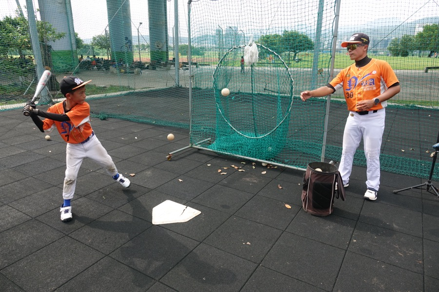
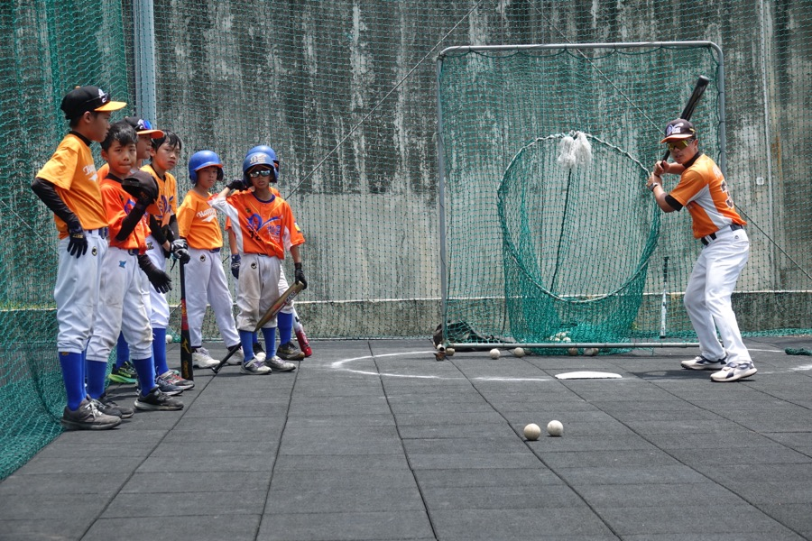
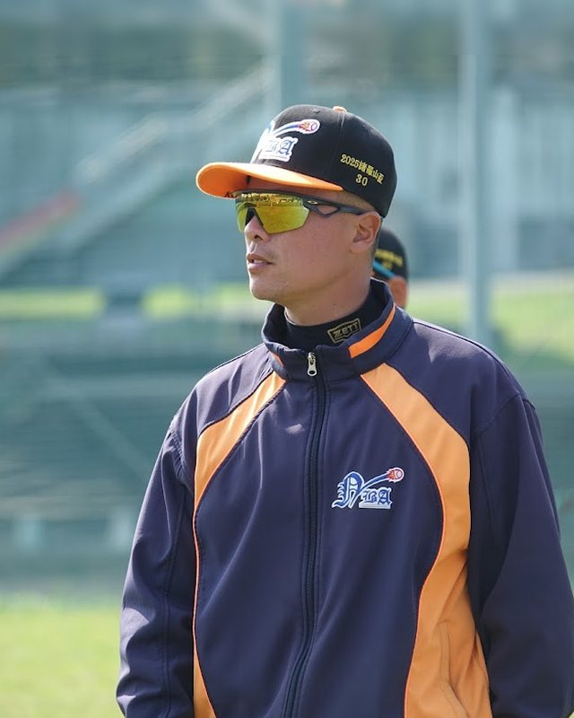
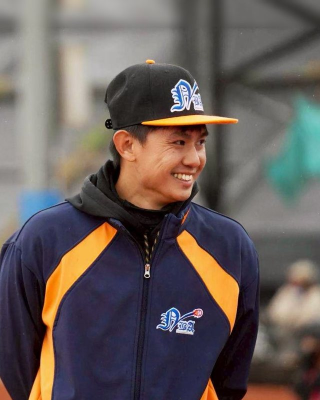
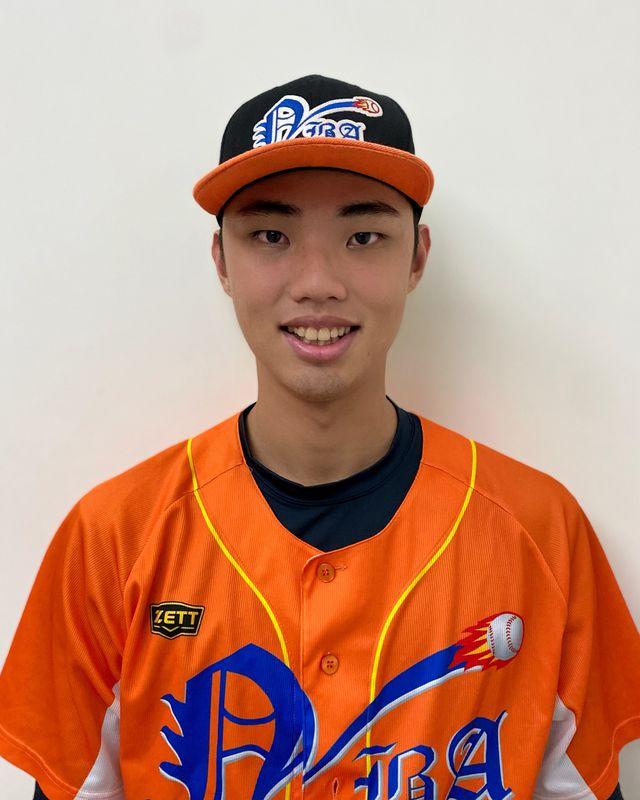
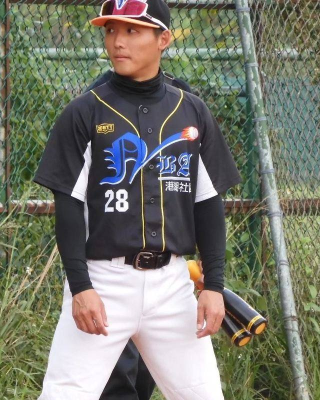
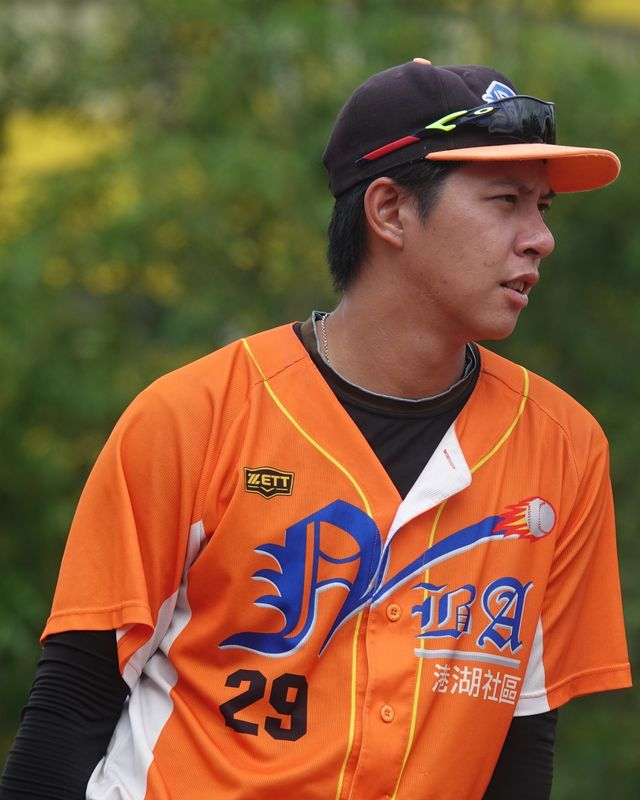
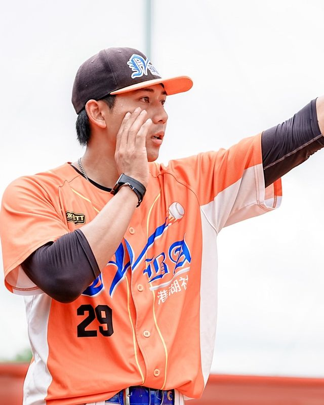
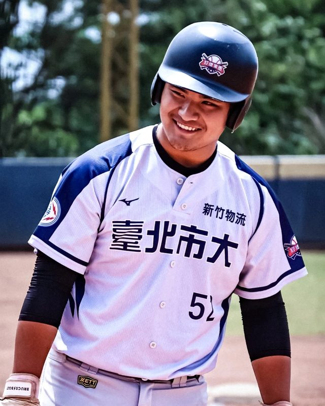

定點練得再漂亮，比賽時球也不會乖乖飛到你面前。所以每堂課的後段，我們會把剛練的東西，放回移動、距離和比賽情境裡，再練一次。









打擊、投球、捕手、守備、肌力與體能，每位教練擅長的項目不太一樣。孩子在這裡改的動作，回到球隊和比賽都接得上。
認識教練團餵球忽高忽低、忽快忽慢，看起來有點亂，孩子練到的其實是「怎麼調整」。美國高中打者的訓練研究裡，依表現加入變化的那一組進步最多，不過變化也不是越大越好。
繼續閱讀 →大聯盟十個球季、超過 45 萬顆投球的研究發現，球數真的會改變主審的好球帶，原因可能跟偏袒無關，而是大腦判斷時會用上過去的經驗。下次遇到爭議球，場邊可以怎麼陪孩子？
繼續閱讀 →外野手背貼著全壘打牆接殺，還是球直接飛進看台？日本一支用大聯盟 Statcast 數據做的動畫算給你看，同樣咬中甜蜜點，揮棒速度每快 10 公里，球大約多飛 9 公尺。
繼續閱讀 →同一個練習，對每個孩子的難度都不一樣，太簡單沒有東西可以學，太難也學不進去，難度剛好卡在「有點難但做得到」的地方，孩子學得最多，所以每個孩子練的不一樣是正常的。
繼續閱讀 →